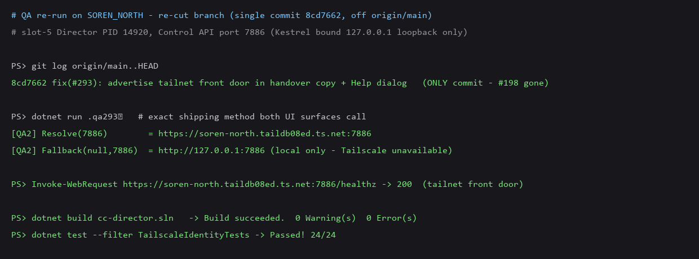

Independent QA · PR #295 · re-cut branch (single commit 8cd7662, off origin/main) · verified live on SOREN_NORTH (Tailscale up, MagicDNS soren-north.taildb08ed.ts.net).
First QA pass FAILED (flow:qa-failed): the feature code was correct, but PR #295 bundled two unmerged issue #198 commits (the branch was cut from bugfix/198-terminal-pane-resilience instead of main). The Developer re-cut the branch off origin/main (cherry-picked only the #293 commit). This report verifies the re-cut branch.
git log origin/main..HEAD
8cd7662 fix(#293): advertise tailnet front door in handover copy + Help dialog <- the ONLY commit; #198 commits gone
PR #295 now contains exactly one commit, isolated to issue #293. Verified there is no longer any issue #198 file (TerminalPane.razor, cockpit-terminal.js) in the branch diff vs main.
| Criterion | Expected | Actual (live, QA re-run) | Result |
|---|---|---|---|
| Tailnet up → both surfaces advertise the front door | https://<magicdns>:<port> |
ResolveAdvertisedControlApiEndpoint(7886) = https://soren-north.taildb08ed.ts.net:7886 (the exact method both UI surfaces call) |
PASS |
| Tailscale down → clearly-labelled loopback | http://127.0.0.1:<port> (local only - Tailscale unavailable) |
FormatAdvertisedControlApiEndpoint(null,7886) = http://127.0.0.1:7886 (local only - Tailscale unavailable) |
PASS |
| Pasted tailnet value is reachable | GET <endpoint>/healthz 2xx |
https://soren-north.taildb08ed.ts.net:7886/healthz → 200 |
PASS |
| "Confirmed CORRECT" loopback uses untouched | Only the 2 surfaces change | #293 commit touches only HelpDialog/MainWindow/TailscaleIdentity(+tests); MainWindow:1795 /sessions/{id}/view loopback (do-not-touch list) left as-is |
PASS |
Build succeeded. 0 Warning(s) 0 Error(s) (confirms dropping #198's changes broke nothing).TailscaleIdentityTests: 24/24 pass.
VERIFIED — all acceptance criteria met, regression/method checks pass, PR isolated to #293.
Standalone QA does not merge: PR #295 is left open for the human to squash-merge (DEVELOPMENT_METHOD.md — merge-on-pass applies only inside the implementation-loop).